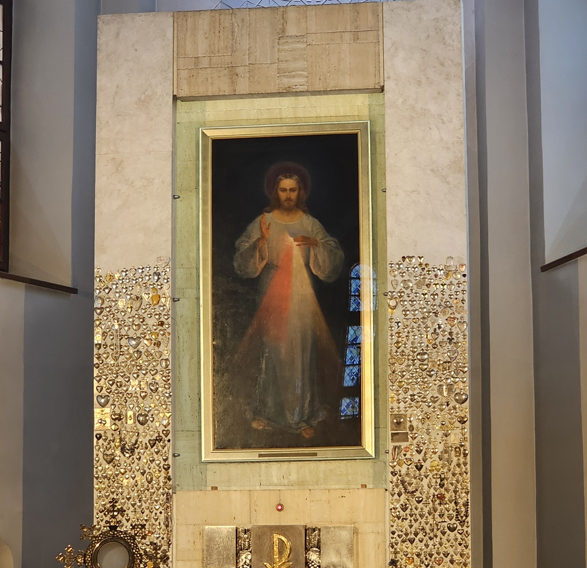

Galeria
Imagens da vida da Santa Faustina Kowalska



"A Apóstola da Divina Misericórdia"
"Jesus, eu confio em Ti."
Antes de ser conhecida mundialmente como a secretária da Divina Misericórdia, ela era apenas Helena Kowalska: uma jovem camponesa nascida em 25 de agosto de 1905 no humilde vilarejo de Głogowiec, na Polônia. Terceira de dez irmãos, Helena cresceu em uma rotina de privações econômicas e orações profundas, desenvolvendo desde os sete anos um desejo ardente de se consagrar a Deus.
A pobreza extrema de sua família parecia um obstáculo intransponível, pois os conventos da época exigiam um dote financeiro que seus pais jamais poderiam pagar. Enviada para trabalhar como empregada doméstica nas cidades vizinhas, Helena tentou, por um tempo, sufocar aquela voz interior que a chamava, buscando viver como uma jovem comum de seu tempo.
A reviravolta definitiva de sua vida aconteceu em 1924, de forma cinematográfica. Durante um baile na cidade de Łódź, enquanto dançava, Helena congelou: ao seu lado, surgiu a figura de Jesus Cristo, desfigurado, coberto de chagas e despojado de suas vestes. O olhar do Nazareno cruzou com o dela, desferindo uma pergunta que ecoaria por toda a sua eternidade: "Até quando te suportarei e até quando me deixarás esperando?"
Tomada por um choque profundo, ela abandonou a festa às pressas, caiu de joelhos na catedral local e, seguindo uma instrução divina que ecoou em seu peito, embarcou no primeiro trem para Varsóvia. Sem dinheiro, sem malas e sem conhecidos, Helena caminhava rumo ao seu destino.
Após ser rejeitada por inúmeros mosteiros devido à sua aparência simples e falta de recursos, Helena foi acolhida em 1 de agosto de 1925 pela Congregação das Irmãs de Nossa Senhora da Misericórdia. Para pagar seu próprio enxoval, trabalhou mais um ano como doméstica antes de receber o hábito e o nome que marcaria a história cristã: Irmã Maria Faustina do Santíssimo Sacramento.
Na rotina dos conventos, Faustina era o retrato da simplicidade oculta. Exercia as funções mais humildes — cozinheira, jardineira e porteira. Para as outras freiras, ela era apenas uma irmã silenciosa, prestativa e recolhida. Ninguém imaginava que aquela mulher de saúde frágil vivia um misticismo avassalador em sua alma.
Em 22 de fevereiro de 1931, na solidão de sua cela em Płock, o invisível rasgou o véu da realidade novamente. Jesus manifestou-se a ela com uma túnica branca. De Seu coração transpassado emanavam dois grandes feixes de luz: um raio vermelho, simbolizando o sangue que é a vida das almas, e um raio pálido, representando a água que as justifica. Ali, a freira que mal sabia escrever recebeu uma ordem monumental: "Pinta uma imagem de acordo com o modelo que estás vendo, com a inscrição: Jesus, eu confio em Vós."
A missão esbarrou na incompreensão humana. Superioras e confessores desconfiavam daquela jovem, sugerindo que as visões eram frutos de histeria ou alucinação. Como uma freira de clausura, isolada e sem talentos artísticos, faria um quadro ser venerado no mundo inteiro? A resposta divina veio em 1933, em Vilnius, através do **Padre Miguel Sopoćko**.
O teólogo e confessor submeteu Faustina a rigorosos exames psiquiátricos. Constatada a sua perfeita lucidez, Sopoćko tornou-se o braço direito da profetisa. Foi ele quem financiou o pintor Eugeniusz Kazimirowski para traduzir as visões de Faustina na tela. Durante meses, ela visitou o ateliê secretamente, mas ao ver a obra terminada, chorou de desilusão. Ela correu para a capela e queixou-se: "Quem Vos pintará tão belo como Vos sois?". No silêncio de sua alma, Jesus a confortou:
"O valor da imagem não está na beleza da tinta nem do pincel, mas na Minha graça."
Por obediência ao Padre Sopoćko, Faustina começou a registrar suas experiências místicas. Nascia o Diário: A Misericórdia Divina na Minha Alma, uma obra-prima da literatura espiritual escrita a lápis em cadernos escolares comuns. Nessas páginas, ela ditou ao mundo as novas práticas pedidas por Cristo: a Coroa da Divina Misericórdia, a Hora da Misericórdia (às três da tarde) e a instituição do Domingo da Misericórdia.
Mas o privilégio místico cobrou um preço altíssimo. Faustina atravessou a dolorosa "noite escura da alma" — um estado de abandono espiritual profundo onde sentia o peso esmagador de todos os pecados da humanidade, experimentando a terrível sensação de solidão cósmica.
Paralelamente, seu corpo físico era consumido por uma tuberculose pulmonar e intestinal implacável. Faustina tossia sangue nos bastidores do convento, mas cruzava os corredores sorrindo, oferecendo sua agonia silenciosa pela conversão dos pecadores. Seu calvário físico terminou em 5 de outubro de 1938, em Cracóvia. Com apenas 33 anos — a mesma idade de Cristo — ela entregou sua alma, sussurrando sua última jaculatória de confiança.
A história de Faustina na modernidade é marcada por um paradoxo impressionante. Logo após sua morte, a Segunda Guerra Mundial estourou, e seu quadro tornou-se o único consolo de uma Polônia pisoteada pelo horror nazista e soviético. No entanto, devido a traduções errôneas e imprecisas de seu Diário enviadas a Roma, o Vaticano emitiu em 1959 uma proibição severa: os escritos e as imagens de Faustina foram banidos por duas décadas.
A humilhação póstuma da "santa proibida" só começou a ser desfeita pelas mãos de outro gigante polonês: o Cardeal Karol Wojtyła. Como Arcebispo de Cracóvia, ele liderou uma reavaliação teológica impecável que culminou na revogação da proibição em 1978. Apenas duas semanas depois, Wojtyła foi eleito Papa, tornando-se **João Paulo II**.
O destino divino se cumpriu de forma poética: no dia 30 de abril de 2000, cruzando as portas do novo milênio, o Papa João Paulo II canonizou solenemente a humilde faxineira polonesa, instituindo a Festa da Divina Misericórdia para o mundo inteiro. A jovem que fugiu de um baile para seguir uma visão entrava definitivamente para a história como a primeira santa do século XXI.
33 anos de vida — humildade, sofrimento e uma mensagem que mudou a espiritualidade do século XX
25 Ago 1905
Nasce Helena Kowalska em família camponesa polonesa, terceira de dez filhos.
1925 · 20 anos
Após visão de Jesus sofredor, entra na Congregação das Irmãs da Nossa Senhora da Misericórdia em Varsóvia.
1931
Jesus aparece com dois raios saindo do coração e pede que seja pintado o quadro da Divina Misericórdia com a inscrição "Jesus, eu confio em Ti."
1934
A pedido de seu diretor espiritual, o Padre Miguel Sopocko, começa a registrar suas revelações num diário que terá quase 700 páginas.
1935
Jesus revela a Faustina a Coroa da Divina Misericórdia — oração que hoje é rezada por milhões de católicos em todo o mundo.
5 Out 1938
Falece de tuberculose em Cracóvia com a mesma idade de Cristo. Suas últimas palavras foram "Jesus, eu confio em Ti."
18 Abr 1993
João Paulo II a beatifica em Roma — seu compatriota polonês que foi um dos maiores promotores da devoção à Divina Misericórdia.
30 Abr 2000
João Paulo II a canoniza e institui oficialmente o Domingo da Divina Misericórdia para a Igreja universal.
Os prodígios reconhecidos pela Igreja para sua beatificação e canonização
01
Estados Unidos
Uma mulher americana sofria de linfoma em estágio avançado considerado incurável. Após intensa oração pela intercessão de Faustina Kowalska e novena da Divina Misericórdia, foi curada completamente de forma inexplicável. O caso foi investigado e reconhecido pelo Vaticano, abrindo o caminho para a beatificação em 1993.
Aprovado em 1992 · para a Beatificação02
El Salvador
Uma mulher salvadorenha com doença grave e sem perspectiva de cura foi curada de forma súbita e completa após orações pela intercessão de Faustina. O caso foi investigado e aprovado pelo Dicastério para as Causas dos Santos, habilitando a canonização por João Paulo II em 30 de abril de 2000.
Aprovado em 1999 · para a CanonizaçãoImagens da vida da Santa Faustina Kowalska

Imagens utilizadas sob licença de seus respectivos autores. Créditos completos disponíveis aqui.
Documentação utilizada para a elaboração deste perfil
Diário — A Misericórdia Divina na Minha Alma
Santa Faustina Kowalska · Editora Loyola, 2003
Santa Faustina — A Apóstola da Misericórdia Divina
Sophia Michalenko · Editora Canção Nova, 2000
Canonização de Faustina Kowalska — Homilia de João Paulo II
Santa Sé · 30 de abril de 2000
Senhor Jesus, Tu que revelaste a Santa Faustina a profundidade da Tua misericórdia, concede-nos, por sua intercessão, a graça de confiar em Ti — não apenas quando a vida é fácil, mas especialmente quando parece impossível.
Ela era uma camponesa simples sem instrução, e Tu a escolheste para proclamar ao mundo que a Tua misericórdia é maior do que qualquer pecado, maior do que qualquer medo, maior do que a própria morte. Que sua mensagem ressoe em nossos corações como um convite permanente à esperança.
Santa Faustina, apóstola da Divina Misericórdia, intercede por nós. Ensina-nos a rezar com a mesma confiança com que rezavas: Jesus, eu confio em Ti. Amém.
· Para uso privado · Aprovação eclesiástica recomendada ·